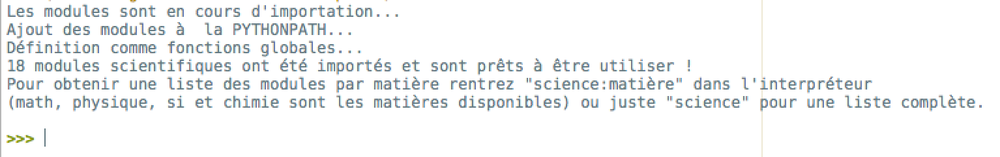

Description
IEP-science est un programme servant à automatiser l'importation de modules scientifiques python sur des postes utilisant IEP et dérivés (Pyzo...) comme I.D.E. pour Python.
Outre le fait de rassembler des modules absents de Scipy (la plupart proviennent de collègues en classes préparatoires), mais néanmoins intéressants et pratiques, son intérêt réside dans le gain de temps réalisé lors de nombreuses installations (écoles d'ingénieur, classes préparatoires aux grandes écoles).
Fonctionnalités
- Import de modules de Mathématiques, Physique, Sciences Industrielles et Chimie) à chaque démarage de la distribution Python (copie les modules dans la Python path)
- Les fonctions sont globales c'est à dire qu'il n'y a pas besoin d'indiquer le nom du module (ex: math.sin())
- Liste des modules disponibles par matière en invoquant le nom de la matière depuis un interpréteur avec
science:matière (math, physique, si et chimie en nom de matière)
Capture d'écran

Notes d'utilisation
- IEP doit être installé sur l'ordinateur. Si vous ne l'avez pas pas déjà fait vous pouvez le télécharger ici.
- S'il s'agit d'une version portable de Pyzo mais néanmoins présent sur le disque où IEP-science est exécuté, le programme activera l'installation de modules via des binaires grâce à pyzo_activate
- IEP-Sciences cherchera I.E.P. dans son dossier d'installation traditionel et s'il ne le trouve pas cherchera récursivement dans les dossiers parents.
Bugs
IEP-Sciences a été testé fonctionel sur windows 7 et windows XP. Seul un bug important a été relevé : un conflit avec une autre distribution python précédement installé empêchait l'exécution.
Si vous rencontrez un bug, merci de m'envoyer un mail avec "Bug" en objet à login@outlook.com en remplaçant login par frederic.lepoutre